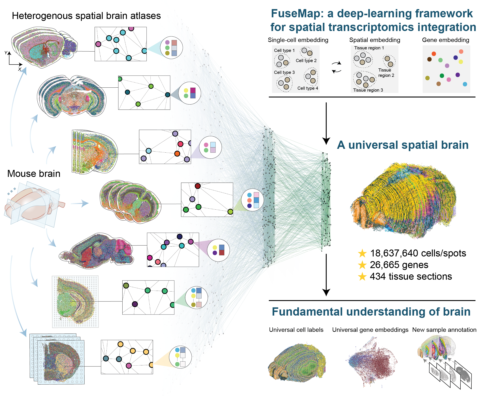
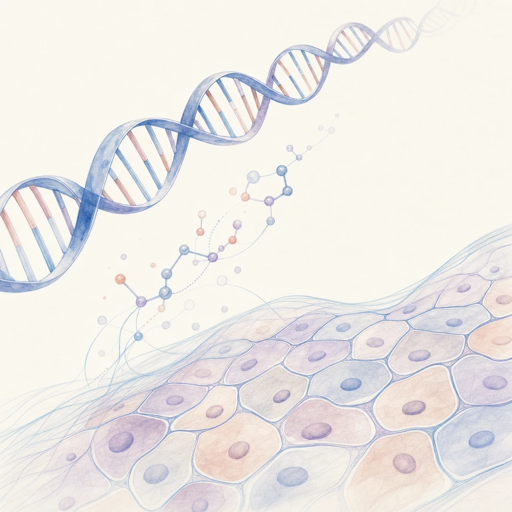
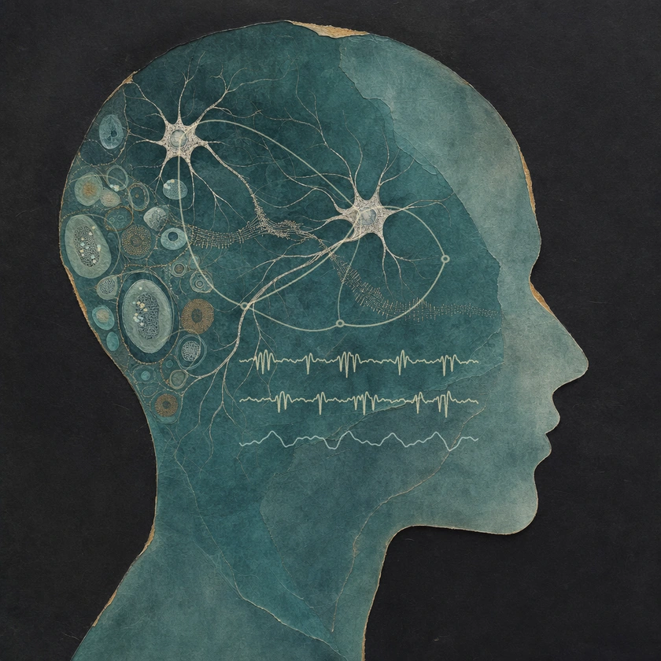
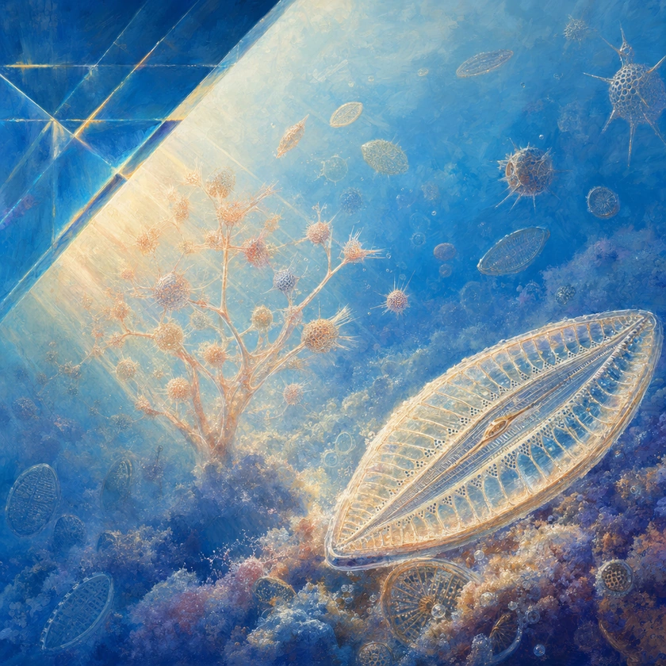
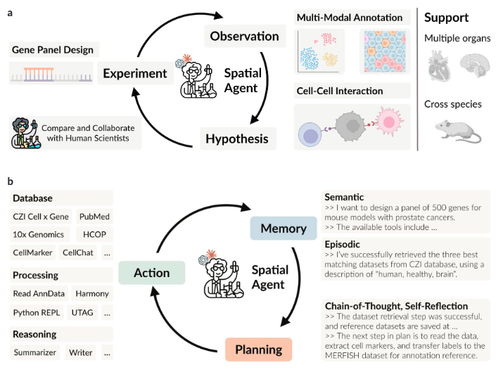
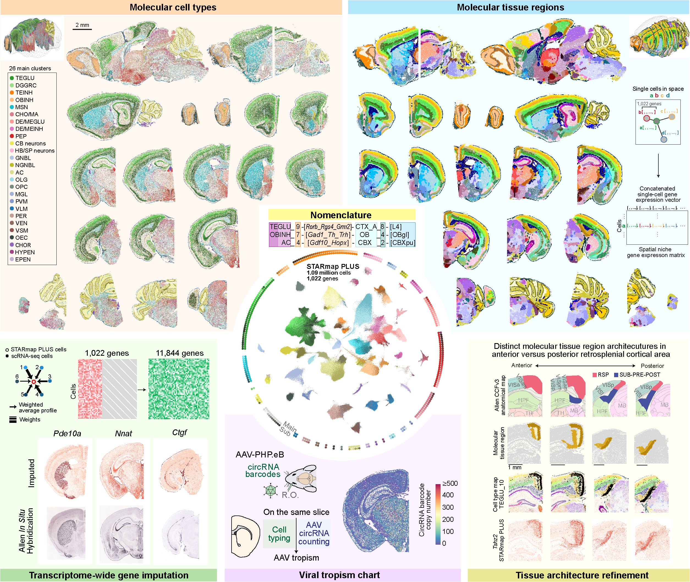
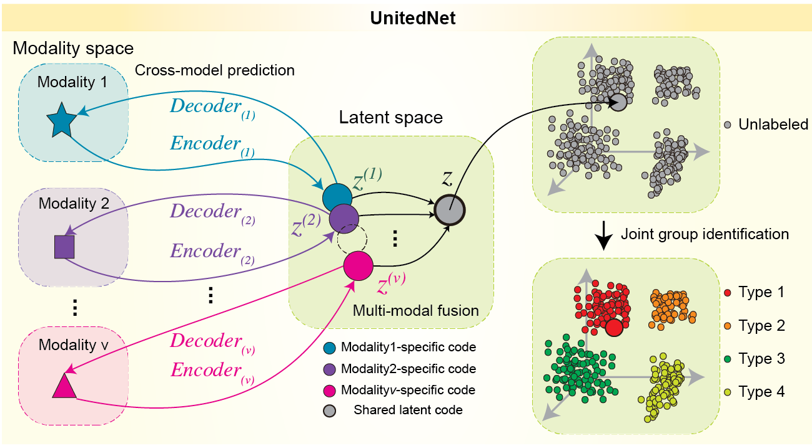
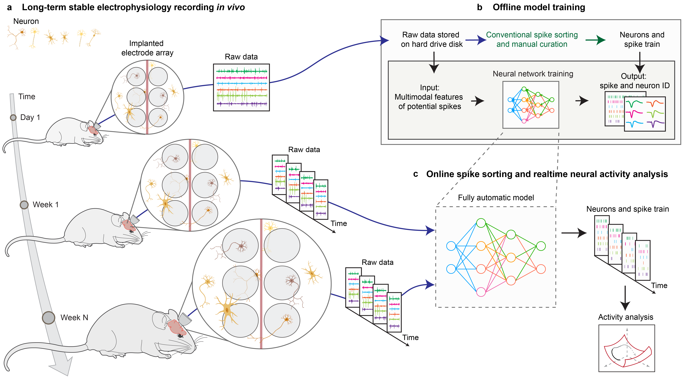
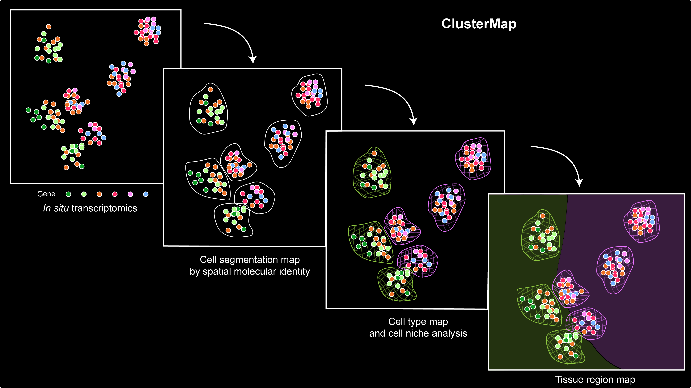

An agentic AI spatial molecular foundation model of the brain
A shared molecular model of the brain
Nature Methods · Accepted, 2026The He Lab at the University of Illinois Urbana-Champaign
We develop AI to understand how biological changes shape human health and intelligence, and to guide ways of improving both.
Our research connects molecular and cellular mechanisms to organ function, brain dynamics, and cognition through models whose predictions can be tested experimentally.

We connect genes, cells, and tissues to understand how biological systems function and how molecular changes lead to disease.

We connect genes, cells, and brain circuits to understand how cognition and social behavior emerge, using multimodal AI across species and disease.

We build AI partners that help people connect evidence, uncover biological mechanisms, and expand their capabilities for scientific discovery.

A shared molecular model of the brain
Nature Methods · Accepted, 2026
AI agents for spatial biology
bioRxiv, 2025
Mapping the mouse central nervous system at molecular resolution
Nature, 2023
Connecting multimodal views of cells
Nature Communications, 2023
Tracking neural activity over time
bioRxiv, 2024
Identifying cells and tissue structure from spatial gene expression
Nature Communications, 2021We welcome students, researchers, and partners who share our curiosity about biology and the potential of AI to benefit people. Help shape the lab as we prepare to launch at Illinois in 2027.
Learn about joining the lab